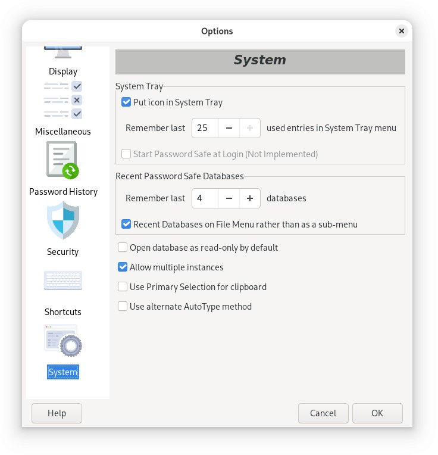

The System Tab provides access to settings that are related to Password Safe's interaction with the system on which it is running.
If checked, Password Safe will minimize to the System Tray area. If unchecked, the program will minimize to the task bar.
The icon in the system tray indicates whether the password database is locked () or unlocked (). If it is locked, you will be prompted for the master password when you try to restore it.
Note: On Linux, support for System Tray depends on the Display Server (such as Wayland or X.Org/X11), and the desktop environment (such as Gnome or KDE). In addition, it may be necessary to install a desktop environment extension that enables support for System Tray, then this option will be available in the application.
If the Put icon in System Tray option is enabled, you can right-click on the system tray icon to get to the most recently used entries directly, without going through the application's main screen. This option allows you to configure how many recent entries you wish to keep in the system tray icon's list. NOTE: This list is saved in the database only when a read/write database is saved or closed.
If checked, this will cause Password Safe to start automatically in the
System tray when you log on. Note that you will be prompted for the
master password the first time you double-click on the System Tray
icon, not before.
Note: If you see a "Not Implemented" message, you can still configure the application to start at login using your operating system's built-in tools.
For example, use the Startup Applications tool in Linux Mint or go to Login Items in System Settings in macOS.
These controls allow you to configure how many recently opened databases are displayed in the File menu. Note that you need to exit and restart Password Safe for changes in this control to take effect.
This option determines how the recently opened databases are presented in the File menu - directly on the menu, or as a sub-menu.
Setting this option will cause Password Safe to open databases in read-only mode by default. This may be useful in a multi-user environment, as by default Password Safe allows write access to the first person who opens the database, and restricts others to read-only mode. With this option, you can determine by site policy who will have write-access to a given database.
This makes it easier to use separate databases to further organize your passwords (for example, one for work and one for home). You can also use the "Dragbar" to drag & drop an entry or group from one instance into the database of another instance.
The Primary Selection is a Linux-specific clipboard feature that copies text immediately upon highlighting, allowing it to be pasted instantly by clicking the middle mouse button. It operates independently of the standard Ctrl+C/Ctrl+V clipboard buffer.
If AutoType doesn't work, setting this may help on some systems.